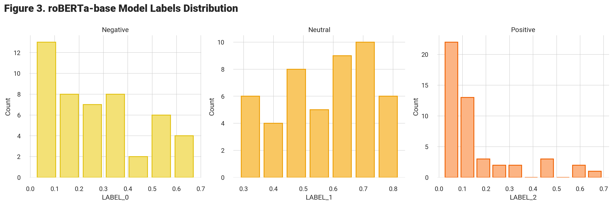
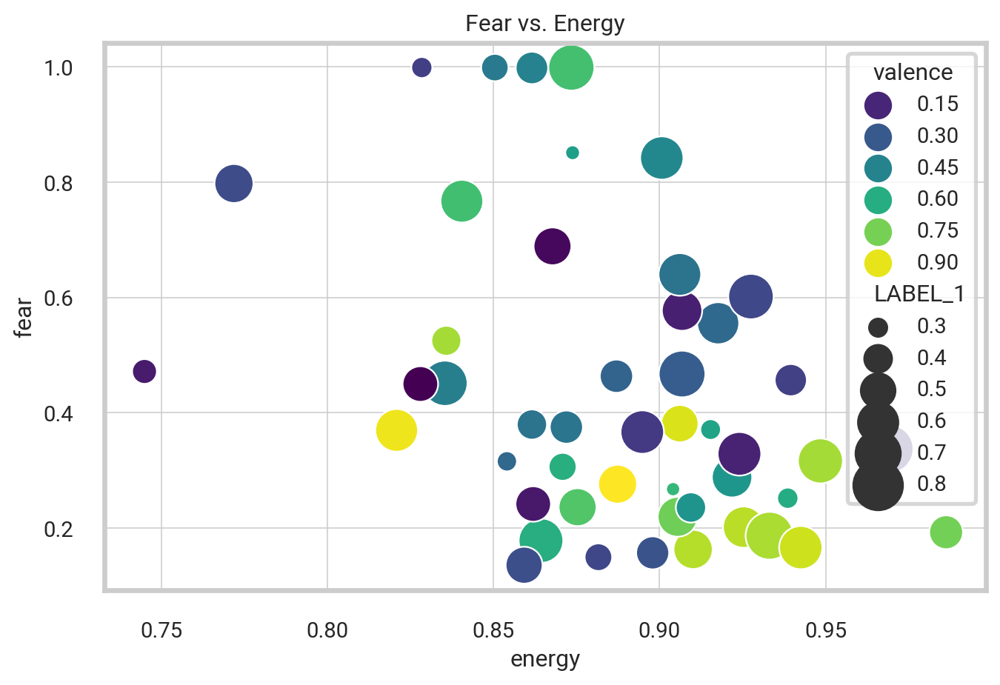
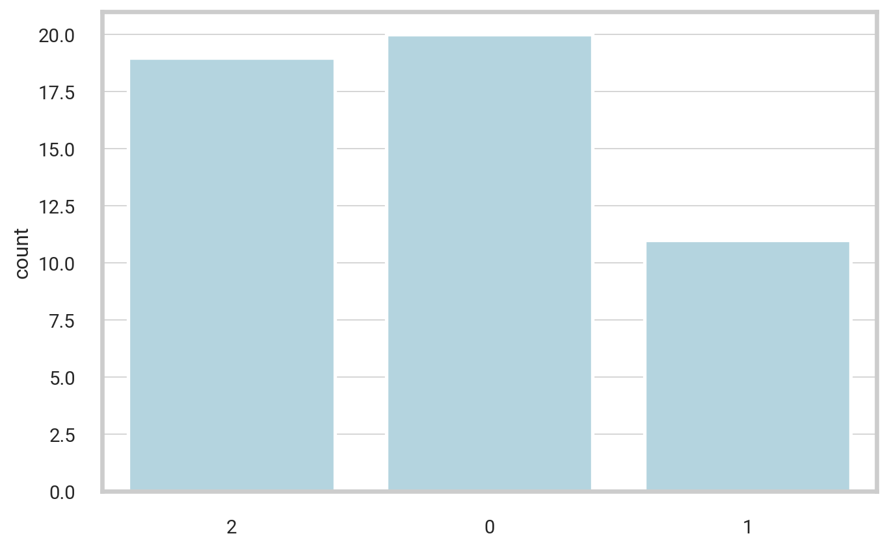
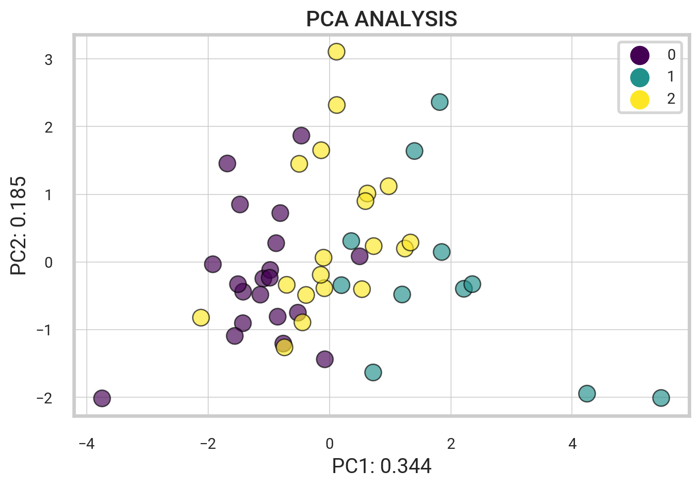

import spotipy
from spotipy.oauth2 import SpotifyClientCredentials
# Set client id and client secret
my_auth = SpotifyClientCredentials(client_id = "xxx", client_secret = "xxx")
sp = spotipy.Spotify(auth_manager=my_auth) # Spotify authenticationNLP Song Lyrics
Overview
Objective. The following project involves extracting and analyzing Spotify data from top playlists using the Spotify and Genius Lyrics Web API. Natural Language Processing techniques are used to process lyrics and perform sentiment analysis. K-means clustering and PCA analysis are employed to categorize songs and analyze relationships between musical features.
Extracting Spotify Data
Getting started, we want to extract data for a set of tracks within one of Spotify’s top-featured playlists. Leveraging the Spotify Web API, we can seamlessly obtain detailed data for a song, such as the artist, the album it belongs to, its release date, popularity, and audio features like danceability, energy, and tempo.
Accessing the Spotify Web API
Python libraries like spotipy offer a user-friendly way to interact with the Spotify API, offering a range of functions that streamline tasks like API authentication, retrieving playlist data, and obtaining information for any given song. To authenticate access, we provide our client ID and secret. Once authenticated, we can interact with the API and retrieve data.
Spotify’s Featured Playlists
Let’s take a look at the popular Spotify playlists. Below, the code retrieves a range of Spotify playlists and generates a dataframe containing details for each playlist.
| thumbnail | playlist_name | playlist_id | description | total | |
|---|---|---|---|---|---|
| 0 | Today’s Top Hits | 37i9dQZF1DXcBWIGoYBM5M | Dua Lipa is on top of the Hottest 50! | 50 | |
| 1 | RapCaviar | 37i9dQZF1DX0XUsuxWHRQd | New music from Future and Metro Boomin. | 50 | |
| 2 | Hot Country | 37i9dQZF1DX1lVhptIYRda | Today's top country hits. Cover: Tyler Hubbard | 50 |
Extracting Track Data From Playlist
Next, we utilize Spotify’s API to extract further details about each song within the playlist. We obtain metadata such as the track name, the artist it’s sung by, the album it belongs to, the release date, and track features such as danceability, tempo, and popularity.
def get_playlist_tracks(playlist_URI):
results = sp.playlist_tracks(playlist_URI)
tracks = results["items"]
while results["next"]:
results = sp.next(results)
tracks.extend(results["items"])
return tracksChoose a specific playlist to analyze by copying the URL from the Spotify Player interface. Using that link, the playlist_tracks method retrieves a list of IDs and corresponding artists for each track from the playlist. Specifically, we analyze Spotify’s Today’s Top Hits playlist.
| name | artist | popularity | artist_genres | release_date | |
|---|---|---|---|---|---|
| 0 | Beautiful Things | Benson Boone | 100 | ['singer-songwriter pop'] | 2024-01-18 |
| 1 | OKLOSER | Doja Cat | 69 | ['dance pop', 'pop'] | 2024-04-05 |
| 2 | i like the way you kiss me | Artemas | 95 | [] | 2024-03-19 |
Natural Language Processing
Using the data gathered from the Spotify API, we now want to extract and process the lyrics for each song. This is accomplished through scraping textual lyrical data from the Genius Lyrics website. Following extraction, the lyrics are thoroughly processed and cleaned before undergoing sentiment analysis.
Scraping the Web
The lyricsgenius is a fundamental library allowing for web scraping of the Genius Lyrics website. Through the initialization of the genius variable, one can access the Genius API and retrieve the lyrics of any given song, such as “Too Many Nights” by Metro Boomin.
import lyricsgenius
genius = lyricsgenius.Genius(access_token)
song = genius.search_song("Too Many Nights", "Metro Boomin")Searching for "Too Many Nights" by Metro Boomin...
Done.Pre-Processing Text Data
Using the genius library, we define a function to fetch the lyrics of a song given the name and artist. Once retrieved, the next step is to pre-process the lyrics. This involves a cleaning process to eliminate patterns that may hinder the overall readability. The script contains the following steps:
- Fetching Lyrics
- Expanding Contractions
- Converting Text to Lowercase
- Spell Checking + Censoring
- Removing Punctuations
- Tokenization
def clean_song_lyrics(song_name, artist_name):
# Fetch song lyrics and clean
lyrics = get_song_lyrics(song_name, artist_name)
lyrics = profanity.censor(contractions.fix(lyrics).lower(), censor_char="")
lyrics = remove_punctuation(lyrics)
# Tokenizing and encoding to ASCII
return [word.encode("ascii", "ignore").decode() for word in word_tokenize(lyrics)]Overall, the clean_song_lyrics function extracts lyrics from Genius database, expands contractions, removes repetitive phrases, corrects spelling, and eliminates profanity. It returns cleaned, tokenized, and encoded lyrics as a list of words.
Further Text Cleaning
We employ the Natural Language Toolkit (NLTK) library and its WordNetLemmatizer tool to filter out stopwords and perform lemmatization. Removing common words like “the” or “and” helps condense the text, allowing for a more thorough analysis of the lyrics’ core message. Lemmatization helps standardize words by transforming different variations of the same verb into their most basic form. See the full documentation here.
| name | artist | lyrics | stopwords_removed | lemmatized | |
|---|---|---|---|---|---|
| 0 | Beautiful Things | Benson Boone | ['for', 'a', 'while', 'there', 'it', 'was', 'rough'... | ['rough', 'lately', 'better', 'last', 'four', 'cold... | ['rough', 'lately', 'well', 'last', 'four', 'cold',... |
| 1 | OKLOSER | Doja Cat | ['i', 'say', 'okay', 'okay', 'loser', 'okay', 'lose... | ['say', 'okay', 'okay', 'loser', 'okay', 'loser', '... | ['say', 'okay', 'okay', 'loser', 'okay', 'loser', '... |
| 2 | i like the way you kiss me | Artemas | ['i', 'like', 'the', 'way', 'you', 'kiss', 'me', 'i... | ['like', 'way', 'kiss', 'like', 'way', 'uh', 'like'... | ['like', 'way', 'kiss', 'like', 'way', 'uh', 'like'... |
Term Frequency Analysis
Let’s examine the most frequent words. Plotting the frequency distribution helps to determine the occurrence of the most common terms in our lyrical corpus.
Sentiment Analysis
Subsequently, the process involves the implementation of pipeline classes to carry out predictions using models accessible in the Hub. The code imports and employs multiple transformer models specifically designed for text classification and sentiment analysis. Specifically, the following procedure creates three distinct pipelines, each equipped with different models that facilitate the assessment of emotions and sentiment in textual content.
import transformers
from transformers import pipeline
# Initialize Genius API and sentiment classifiers
classifiers = [
pipeline("text-classification", model='bhadresh-savani/distilbert-base-uncased-emotion', return_all_scores=True),
pipeline("text-classification", model='cardiffnlp/twitter-roberta-base-sentiment', return_all_scores=True),
pipeline("sentiment-analysis", return_all_scores=True)
]The get_lyric_sentiment function takes in pre-processed lyrics as input and produces a dictionary of sentiment scores. It leverages three distinct classifiers to calculate the scores and aggregates them into a final result. For instance, one of these classifiers is the distilbert-base-uncased-emotion model, specifically trained to detect “emotions in texts such as sadness, joy, love, anger, fear, and surprise”.
# Function to perform sentiment analysis
def get_lyric_sentiment(lyrics, classifiers):
text = " ".join(lyrics)
scores = {}
for classifier in classifiers:
try:
predictions = classifier(text, truncation=True)
for prediction in predictions[0]:
scores[prediction["label"]] = prediction["score"]
except Exception as e:
print(f"Error during sentiment analysis: {e}")
return scoresPutting it All Together
To summarize, the code efficiently collects data and performs text analysis on every song in a playlist. Specifically, it systematically processes a list of tracks and corresponding artists while simultaneously conducting a thorough cleaning procedure on the lyrics. Additionally, the program computes a sentiment score for each song based on the lyrics, indicating whether the lyrics are positive, negative, or neutral.
| name | album | artist | release_date | length | popularity | artist_pop | artist_genres | acousticness | danceability | ... | joy | love | anger | fear | surprise | LABEL_0 | LABEL_1 | LABEL_2 | NEGATIVE | POSITIVE | |
|---|---|---|---|---|---|---|---|---|---|---|---|---|---|---|---|---|---|---|---|---|---|
| 0 | Beautiful Things | Beautiful Things | Benson Boone | 2024-01-18 | 180304 | 100 | 86 | ['singer-songwriter pop'] | 0.151000 | 0.472 | ... | 0.000454 | 0.000210 | 0.000819 | 0.996218 | 0.000817 | 0.033695 | 0.346160 | 0.620145 | 0.012751 | 0.987248 |
| 1 | OKLOSER | Scarlet 2 CLAUDE | Doja Cat | 2024-04-05 | 169066 | 69 | 87 | ['dance pop', 'pop'] | 0.025500 | 0.898 | ... | 0.049557 | 0.021035 | 0.072808 | 0.021095 | 0.002085 | 0.366062 | 0.583096 | 0.050843 | 0.996938 | 0.003062 |
| 2 | i like the way you kiss me | i like the way you kiss me | Artemas | 2024-03-19 | 142514 | 95 | 81 | [] | 0.000938 | 0.599 | ... | 0.885468 | 0.089855 | 0.003870 | 0.001377 | 0.001145 | 0.034661 | 0.521730 | 0.443609 | 0.984495 | 0.015505 |
3 rows × 33 columns
In summary, the above code aims to collect and refine song lyrics by eliminating stopwords and conducting lemmatization. Subsequently, it employs pre-trained models for sentiment analysis to determine the prevailing emotion conveyed in the lyrics. Finally, the program compiles all this information into a dataframe for further analysis.
Twitter-roBERTa-base for Sentiment Analysis
Now, we present a graphical representation of the results obtained from the roBERTa-base model “trained on roughly 58 million tweets and fine-tuned for sentiment analysis using the TweetEval benchmark” (EMNLP 2020). According to the TweetEval reference paper and official Github repository, the resulting labels 0, 1, and 2 correspond to Negative, Neutral, and Positive, respectively.

Correlations Matrix
After completing the initial data analysis, we proceed with generating the Pearson correlations matrix using the Pandas command df.corr(). Subsequently, we visualize the matrix using the seaborn heatmap, providing a detailed understanding of the relationships between the various variables in our dataset.
track_sentiment_df = df_final[['name', 'artist',
'acousticness', 'danceability', 'energy', 'instrumentalness',
'loudness', 'speechiness', 'tempo', 'valence',
'sadness', 'joy', 'love', 'anger', 'fear', 'surprise',
'LABEL_0', 'LABEL_1', 'LABEL_2', 'NEGATIVE', 'POSITIVE']]
# Find the pearson correlations matrix
corr = track_sentiment_df.corr(method = 'pearson')
The code below produces a scatterplot that showcases the correlation between energy and fear. The x-axis represents the energy value, while the y-axis represents the fear sentiment. The size of each data point corresponds to the label indicating the neutral sentiment level, and its color represents the valence value. Moreover, each bubble contains its energy value within, allowing for a straightforward interpretation of the data.
Text(0.5, 1.0, 'Fear vs. Energy')
Similarly, the scatterplot presented above utilizes the track sentiment data, comparing the energy and fear levels of the tracks based on valence and size.
PCA Analysis
Next, we implement principal component analysis (PCA) on a comprehensive dataset comprising a range of musical features.
First, we create a table from the df_final dataframe by extracting specific columns that facilitate our analysis. These columns consist of acousticness, danceability, energy, speechiness, tempo, and valence of each track, as well as emotional features such as sadness, joy, love, anger, fear, and surprise. In addition, the table includes the track name and flags for both negative and positive sentiments.
We then perform PCA on the data in the table and apply it to generate a biplot depicting the relationship between the features and tracks. This biplot quickly reveals any discernible patterns and clusters within the dataset.
X_SMALL = df_final[['acousticness', 'danceability', 'energy', 'speechiness',
'tempo', 'valence', 'sadness', 'joy', 'love', 'anger',
'fear', 'surprise', 'name', 'NEGATIVE', 'POSITIVE']]To process the data, the code employs the PCA and StandardScaler modules from the sklearn decomposition and preprocessing libraries. Specifically, the \(X_i\) variable is used to choose the first 12 columns from the subset of data mentioned above, while the track_name column is chosen as the target variable. Next, the StandardScaler standardizes the \(X_i\) data.
PCA is applied to the standardized data, \(X_{st}\), using the PCA module, and the resulting loadings and eigenvalues are saved.
from sklearn.decomposition import PCA
from sklearn.preprocessing import StandardScaler
from bioinfokit.visuz import cluster
X_i = X_SMALL.iloc[:,0:12]
target = X_SMALL['name'].to_numpy()
X_st = StandardScaler().fit_transform(X_i)
pca_out = PCA().fit(X_st)
# component loadings
loadings = pca_out.components_
# get eigenvalues (variance explained by each PC)
pca_out.explained_variance_array([2.60742957e+00, 1.96582173e+00, 1.51936757e+00, 1.29285435e+00,
1.20409389e+00, 1.12867615e+00, 9.19589146e-01, 5.12748272e-01,
4.40843225e-01, 3.78002524e-01, 2.75471537e-01, 9.61390304e-15])Next, the following code uses the PCA() function to calculate the PCA scores of the standardized data set, \(X_{st}\).
A biplot is generated using the cluster module from the bioinfokit library. The biplot is based on the PCA scores and loadings, and the column names of the \(X_i\) data frame are used as labels for the plot. The variance explained by the first two principal components are also displayed on the plot.
# get biplot
pca_scores = PCA().fit_transform(X_st)
cluster.biplot(cscore=pca_scores, loadings=loadings, labels=X_i.columns.values,
var1=round(pca_out.explained_variance_ratio_[0]*100, 2),
var2=round(pca_out.explained_variance_ratio_[1]*100, 2), #colorlist=target,
show=True,dim=(10,5),dotsize=16)
Then, I assigned the resulting column names to the variable cols_pca using a list comprehension. Using the PCA scores, column names, and the original index from \(X_i\), I created a new pandas DataFrame called df_pca. The first three rows of this new DataFrame is shown below.
pca_scores = PCA().fit_transform(X_st)
cols_pca = [f'PC{i}' for i in range(1, pca_out.n_components_+1)]
df_pca = pd.DataFrame(pca_scores, columns=cols_pca, index=X_i.index)| PC1 | PC2 | PC3 | PC4 | PC5 | PC6 | PC7 | PC8 | PC9 | PC10 | PC11 | PC12 | |
|---|---|---|---|---|---|---|---|---|---|---|---|---|
| 0 | 2.104921 | -0.703870 | -0.449428 | 0.054701 | -2.316441 | 1.502806 | 0.124803 | -1.210642 | 1.100870 | -0.910310 | -0.629496 | -1.447422e-07 |
| 1 | -3.723234 | -2.537185 | 1.052730 | -1.604456 | -0.505719 | -1.728136 | 2.323861 | -0.279028 | -0.692971 | -1.101964 | -0.180153 | -1.370107e-07 |
| 2 | -2.202076 | 0.482354 | -0.424752 | 1.341098 | -0.050790 | 0.763951 | -1.798994 | 0.433982 | -0.490282 | -0.337022 | 0.359789 | -2.117456e-09 |
The variance ratios for the PCA output and the cumulative sum of the explained variance ratios are printed below. Specifically, the array displayed represents the amount of variability explained by each component.
print(pca_out.explained_variance_ratio_)
print('----')
print(pca_out.explained_variance_ratio_.cumsum())[2.12940081e-01 1.60542108e-01 1.24081685e-01 1.05583105e-01
9.83343344e-02 9.21752190e-02 7.50997802e-02 4.18744422e-02
3.60021967e-02 3.08702062e-02 2.24968422e-02 7.85135415e-16]
----
[0.21294008 0.37348219 0.49756387 0.60314698 0.70148131 0.79365653
0.86875631 0.91063075 0.94663295 0.97750316 1. 1. ]The loading vectors help visualize the relationship between the original variables and their respective components. These vectors represent the weights of the variables within a mathematical equation used to generate the principal components.
df_weights = pd.DataFrame(pca_out.components_.T, columns=df_pca.columns, index=X_i.columns)
df_weights| PC1 | PC2 | PC3 | PC4 | PC5 | PC6 | PC7 | PC8 | PC9 | PC10 | PC11 | PC12 | |
|---|---|---|---|---|---|---|---|---|---|---|---|---|
| acousticness | 0.429982 | -0.185038 | -0.289349 | -0.208272 | 0.255146 | 0.033623 | 0.102703 | 0.040766 | -0.484959 | -0.037511 | 0.582017 | -2.508072e-08 |
| danceability | -0.403254 | 0.180085 | -0.003241 | -0.314433 | -0.008825 | 0.046065 | 0.516043 | 0.145835 | 0.251713 | 0.456560 | 0.380134 | -2.223341e-09 |
| energy | -0.422629 | 0.047423 | 0.297395 | 0.281021 | 0.077720 | 0.239748 | -0.310296 | 0.086865 | 0.028693 | -0.390775 | 0.575189 | -3.541813e-08 |
| speechiness | -0.322454 | -0.236476 | 0.078486 | -0.003877 | -0.201256 | -0.411806 | 0.503272 | -0.291856 | -0.294055 | -0.445023 | -0.029375 | 4.255371e-09 |
| tempo | -0.161170 | -0.456735 | 0.128464 | 0.397063 | -0.253591 | -0.134998 | -0.133000 | 0.210921 | -0.357470 | 0.562721 | 0.045888 | 1.989463e-08 |
| valence | -0.390247 | -0.097607 | -0.176422 | -0.325334 | 0.117838 | 0.402580 | -0.021178 | 0.452517 | -0.385817 | -0.160074 | -0.381521 | 1.303994e-08 |
| sadness | -0.047228 | -0.464075 | 0.209289 | -0.438591 | 0.222355 | -0.317843 | -0.264417 | 0.086517 | 0.277165 | -0.025458 | 0.025237 | 4.901707e-01 |
| joy | -0.207226 | 0.340111 | -0.570731 | 0.272893 | 0.014588 | -0.259897 | -0.098486 | 0.053411 | -0.077909 | 0.003207 | 0.032686 | 5.947408e-01 |
| love | -0.004763 | 0.432352 | 0.455254 | -0.297329 | -0.122165 | 0.063084 | -0.171260 | -0.336317 | -0.479221 | 0.198448 | -0.021921 | 2.941618e-01 |
| anger | 0.122984 | -0.060202 | 0.307003 | 0.399170 | 0.545581 | 0.255976 | 0.446737 | 0.001680 | -0.027313 | 0.043151 | -0.167417 | 3.664253e-01 |
| fear | 0.234053 | -0.191067 | -0.027640 | -0.014592 | -0.651966 | 0.466372 | 0.171745 | 0.044005 | 0.143826 | -0.144700 | 0.083373 | 4.303071e-01 |
| surprise | 0.276657 | 0.314524 | 0.319731 | 0.021877 | -0.150950 | -0.365804 | 0.132030 | 0.713932 | -0.059582 | -0.185139 | 0.014813 | 7.292557e-03 |
Spotify Songs - Similarity Search
Below, we create a query to retrieve similar elements based on Euclidean distance. In mathematics, the Euclidean distance between two points is the length of the line segment between the two points. In this sense, the closer the distance is to 0, the more similar the songs are.
KNN Algorithm
To obtain a string search for a song, utilize the getMusicName function shown below, which returns the artist and song name.
The k-Nearest Neighbors (KNN) algorithm searches for k similar elements based on a query point at the center within a predefined radius. We execute the KNN algorithm using the knnQuery function defined below, which takes a query point, a set of characteristic points, and a value for k. It computes the sum of squared differences between each data and query point, followed by the calculation of the Euclidean distance between them. The function then arranges the points by distance and returns the k closest and farthest points.
The querySimilars function then removes the query point and executes the KNN algorithm on the remaining points, returning the k most similar points to the query point based on the specified columns, function, and parameter.
# Get a song string search
def getMusicName(elem):
return f"{elem['artist']} - {elem['name']}"
def knnQuery(queryPoint, arrCharactPoints, k):
queryVals = queryPoint.tolist()
distVals = []
# Copy of dataframe indices and data
tmp = arrCharactPoints.copy(deep = True)
for index, row in tmp.iterrows():
feat = row.values.tolist()
# Calculate sum of squared differences
ssd = sum(abs(feat[i] - queryVals[i]) ** 2 for i in range(len(queryVals)))
# Get euclidean distance
distVals.append(ssd ** 0.5)
tmp['distance'] = distVals
tmp = tmp.sort_values('distance')
# K closest and furthest points
return tmp.head(k).index, tmp.tail(k).index
# Execute KNN removing the query point
def querySimilars(df, columns, idx, func, param):
arr = df[columns].copy(deep = True)
queryPoint = arr.loc[idx]
arr = arr.drop([idx])
return func(queryPoint, arr, param)KNN Query Example.
We now establish a function that creates customized query points and alters the data columns, allowing for further exploration of various options. To illustrate, the code snippet below chooses a particular group of song features and then seeks out the top k values within that feature set that are equal to one.
To begin, we create a scaler utilizing the preprocessing library from sklearn. It’s worth noting that all the feature values fall within the range of 0 and 1, except for loudness. As a result, we need to scale loudness to conform to the same range.
df = df_finalLet’s search for \(k=3\) similar songs to a query point \(\textrm{songIndex} = 6\).
# Select song and column attributes
songIndex = 4 # query point
columns = ['acousticness', 'danceability', 'energy', 'instrumentalness', 'liveness',
'loudness_scaled', 'tempo',
'speechiness', 'valence']
# Set query parameters
func, param = knnQuery,3
# Implement query
response = querySimilars(df, columns, songIndex, func, param)
print("---- Query Point ----")
print(getMusicName(df.loc[songIndex]))
print('---- k = 3 similar songs ----')
for track_id in response[0]:
track_name = getMusicName(df.loc[track_id])
print(track_name)
print('---- k = 3 nonsimilar songs ----')
for track_id in response[1]:
track_name = getMusicName(df.loc[track_id])
print(track_name)---- Query Point ----
Ariana Grande - we can't be friends (wait for your love)
---- k = 3 similar songs ----
Dasha - Austin
Dua Lipa - Houdini
Hozier - Too Sweet
---- k = 3 nonsimilar songs ----
Imagine Dragons - Eyes Closed
SZA - Saturn
Benson Boone - Slow It DownThe code below implements the same idea as above, but queries each track in a given playlist instead of a single defined query point.
To keep track of the number of songs that are similar and those that are not, we use two dictionaries: similar_count” and “nonsimilar_count”. To do this, we create a loop that goes through the data, running the querySimilars function on each track. A loop then processes “similar” and “non-similar” songs from the results of the query, stored in the “response” variable. If a “similar” song is found, its name is retrieved using the getMusicName function. The song’s name is then added to the “similar_count” dictionary with a count of 1, or incremented if it already exists.
The same process is repeated for the “non-similar” songs, except the count is added to the “nonsimilar_count” dictionary instead.
similar_count = {} # Similar songs count
nonsimilar_count = {} # Non-similar songs count
for track_index in df.index:
# Implement query
response = querySimilars(df, columns, track_index, func, param)
# Get similar songs
for similar_index in response[0]:
track = getMusicName(df.loc[similar_index])
if track in similar_count:
similar_count[track] += 1
else:
similar_count[track] = 1
# Get non-similar songs
for nonsimilar_index in response[1]:
track = getMusicName(df.loc[nonsimilar_index])
if track in nonsimilar_count:
nonsimilar_count[track] += 1
else:
nonsimilar_count[track] = 1Next, we display both the non-similar and similar songs with their respective track name and count.
nonsimilar = dict(sorted(nonsimilar_count.items(), key=lambda item: item[1], reverse=True))
print('---- NON SIMILAR SONG COUNTS ----')
for track_name, track_count in nonsimilar.items():
if track_count >= 8:
print(track_name, ':', track_count)
similar = dict(sorted(similar_count.items(), key=lambda item: item[1], reverse=True))
print('\n---- SIMILAR SONG COUNTS ----')
for track_name, track_count in similar.items():
if track_count >= 5:
print(track_name, ':', track_count)---- NON SIMILAR SONG COUNTS ----
Imagine Dragons - Eyes Closed : 29
SZA - Saturn : 29
Benson Boone - Slow It Down : 29
Billie Eilish - What Was I Made For? [From The Motion Picture "Barbie"] : 21
Zach Bryan - I Remember Everything (feat. Kacey Musgraves) : 21
Good Neighbours - Home : 21
---- SIMILAR SONG COUNTS ----
Kygo - Whatever : 5
Dua Lipa - Houdini : 5
Imagine Dragons - Eyes Closed : 5
21 Savage - redrum : 5
Doja Cat - Agora Hills : 5
Dua Lipa - Training Season : 5
SZA - Snooze : 5
Drake - Rich Baby Daddy (feat. Sexyy Red & SZA) : 5
The Weeknd - One Of The Girls (with JENNIE, Lily Rose Depp) : 5As shown above, the code snippet arranges the “nonsimilar_count” dictionary in a descending sequence, followed by presenting the tracks with the highest non-similar query counts. We repeat the same process for songs that are similar from the “similar_count” dictionary.
Organized Songs in a Playlist
Below, we import the Python pandas, matplotlib.pyplot, and sklearn libraries to our project. These tools help us perform various operations such as clustering, decomposition, and data visualization.
We then obtain a list of songs including their name and various attributes such as acousticness, danceability, energy, instrumentalness, liveness, speechiness, tempo, valence, and loudness. Next, we gather helpful insights about these songs using the’ describe’ function.
import pandas as pd
import matplotlib.pyplot as plt
from sklearn import cluster, decomposition
songs = df[['name','acousticness', 'danceability', 'energy', 'instrumentalness',
'liveness', 'speechiness', 'tempo', 'valence', 'loudness_scaled']]
songs.describe()| acousticness | danceability | energy | instrumentalness | liveness | speechiness | tempo | valence | loudness_scaled | |
|---|---|---|---|---|---|---|---|---|---|
| count | 50.000000 | 50.000000 | 50.000000 | 50.000000 | 50.000000 | 50.000000 | 50.000000 | 50.000000 | 50.000000 |
| mean | 0.223580 | 0.653040 | 0.612722 | 0.004651 | 0.162206 | 0.069552 | 128.615860 | 0.464344 | 0.748874 |
| std | 0.253540 | 0.131416 | 0.146133 | 0.020891 | 0.112612 | 0.050678 | 27.203857 | 0.261281 | 0.174302 |
| min | 0.000938 | 0.411000 | 0.091100 | 0.000000 | 0.039800 | 0.028200 | 77.002000 | 0.056900 | 0.000000 |
| 25% | 0.033000 | 0.553750 | 0.546500 | 0.000000 | 0.098025 | 0.041250 | 111.751000 | 0.243000 | 0.694435 |
| 50% | 0.127000 | 0.645500 | 0.619500 | 0.000002 | 0.116500 | 0.055000 | 122.527500 | 0.423500 | 0.774785 |
| 75% | 0.352000 | 0.754500 | 0.698000 | 0.000190 | 0.171000 | 0.075025 | 148.037250 | 0.670500 | 0.858426 |
| max | 0.959000 | 0.943000 | 0.946000 | 0.135000 | 0.556000 | 0.303000 | 181.489000 | 0.934000 | 1.000000 |
Extracting the song labels from the dataset is the first crucial step. Then, we must select the appropriate features that will serve as inputs for the Affinity Propagation clustering algorithm from the scikit-learn library. During the clustering process, a preference value of -200 is used to ensure optimal performance. Once the data is inputted, the algorithm is trained to achieve the desired outcome.
labels = songs.values[:,0]
X = songs.values[:,1:10]
kmeans = cluster.AffinityPropagation(preference=-200)
kmeans.fit(X)AffinityPropagation(preference=-200)In a Jupyter environment, please rerun this cell to show the HTML representation or trust the notebook.
On GitHub, the HTML representation is unable to render, please try loading this page with nbviewer.org.
AffinityPropagation(preference=-200)
The script below utilizes a dictionary called “predictions” to keep track of the outcomes of a comparison process between two lists: “kmeans.predict(X)” and “labels”. For each new value, a unique key is generated in the dictionary with the corresponding value from the “labels” list appended to the key’s list of values.
After sorting all values into their designated keys, we proceed to display each key alongside its relevant values. The output displays each category and the corresponding songs it contains.
predictions = {}
for p,n in zip(kmeans.predict(X),labels):
if not predictions.get(p):
predictions[p] = []
predictions[p] += [n]
for p in predictions:
print("Category",p)
print("-----")
for n in predictions[p]:
print(n)
print("")Category 7
-----
Beautiful Things
greedy
TEXAS HOLD 'EM
Lovin On Me
Gata Only
Whatever
Standing Next to You
Category 1
-----
OKLOSER
i like the way you kiss me
Scared To Start
I LUV IT (feat. Playboi Carti)
FE!N (feat. Playboi Carti)
Category 2
-----
Too Sweet
we can't be friends (wait for your love)
Stick Season
Water
Training Season
Feather
obsessed
Austin
My Love Mine All Mine
yes, and?
Houdini
Never Lose Me
Made For Me
Agora Hills
Make You Mine
CONTIGO (with Tiësto)
Category 0
-----
End of Beginning
Lose Control
Like That
Category 6
-----
Saturn
redrum
Cruel Summer
Slow It Down
Strangers
Eyes Closed
Category 3
-----
One Of The Girls (with JENNIE, Lily Rose Depp)
Whatever She Wants
Belong Together
Category 5
-----
II MOST WANTED
Snooze
exes
if u think i'm pretty
vampire
Rich Baby Daddy (feat. Sexyy Red & SZA)
Type Shit
Category 4
-----
Home
I Remember Everything (feat. Kacey Musgraves)
What Was I Made For? [From The Motion Picture "Barbie"]
The script successfully categorized the playlist into 6 distinct groups based on shared features, resulting in a diverse selection of songs within each category.
K Means Clustering
Using K Means clustering, we choose to break the playlist into 3 smaller playlists.
As shown below, we employ the KMeans algorithm, obtained from the sklearn.cluster library, to cluster a collection of songs into distinct categories based on track features, such as their energy levels and sound qualities. Using three clusters, we apply this algorithm on the track features from the “playlist_tracks” subset of data, dropping the “artist” and “name” columns.
from sklearn.cluster import KMeans
import seaborn as sns
%matplotlib inline
playlist_tracks = df[['artist','name','acousticness','danceability','energy',
'liveness', 'instrumentalness','speechiness','valence']]
kmeans = KMeans(n_clusters = 3)
kmeans.fit(playlist_tracks.drop(['artist', 'name'], axis = 1))KMeans(n_clusters=3)In a Jupyter environment, please rerun this cell to show the HTML representation or trust the notebook.
On GitHub, the HTML representation is unable to render, please try loading this page with nbviewer.org.
KMeans(n_clusters=3)
Additionally, we import the “seaborn” library and use the “%matplotlib inline” command to generate useful plots displayed inline. Below, we generate a count plot with x-axis values set to a list of groups, displayed as string representations, produced by the k-means clustering algorithm.
sns.countplot(x=[str(group) for group in kmeans.labels_], color = 'lightblue')
Visualizing the Clusters
Moving forward, let’s look at differences in the audio features of each group.
from sklearn.preprocessing import StandardScaler
scaler = StandardScaler()
scaler.fit(playlist_tracks.drop(['artist', 'name'], axis = 1))
scaled_data = scaler.transform(playlist_tracks.drop(['artist', 'name'], axis = 1))Code
from sklearn.decomposition import PCA
pca = PCA(n_components =2)
pca.fit(scaled_data)
data_pca = pca.transform(scaled_data)
plt.scatter(data_pca[:,0], data_pca[:,1], c = list(kmeans.labels_), cmap = 'Paired')
plt.xlabel('PC1: {:.3f}'.format(pca.explained_variance_ratio_[0]), size = 15)
plt.ylabel('PC2: {:.3f}'.format(pca.explained_variance_ratio_[1]), size = 15)Text(0, 0.5, 'PC2: 0.185')
Text(0, 0.5, 'PC2: 0.185')
playlist_tracks['group'] = list(kmeans.labels_)
playlist_tracks = playlist_tracks.astype({'group': str})
means = pd.DataFrame(index = range(0,3),
columns = list(playlist_tracks[playlist_tracks['group'] == '0'].describe().loc['mean'].index))
means.iloc[0] = playlist_tracks[playlist_tracks['group'] == '0'].describe().loc['mean']
means.iloc[1] = playlist_tracks[playlist_tracks['group'] == '1'].describe().loc['mean']
means.iloc[2] = playlist_tracks[playlist_tracks['group'] == '2'].describe().loc['mean']
means| acousticness | danceability | energy | liveness | instrumentalness | speechiness | valence | |
|---|---|---|---|---|---|---|---|
| 0 | 0.117477 | 0.71855 | 0.67045 | 0.130555 | 0.000861 | 0.07814 | 0.71945 |
| 1 | 0.634273 | 0.550091 | 0.485736 | 0.206273 | 0.01321 | 0.047455 | 0.370818 |
| 2 | 0.097499 | 0.643684 | 0.625474 | 0.170011 | 0.003685 | 0.073305 | 0.249958 |